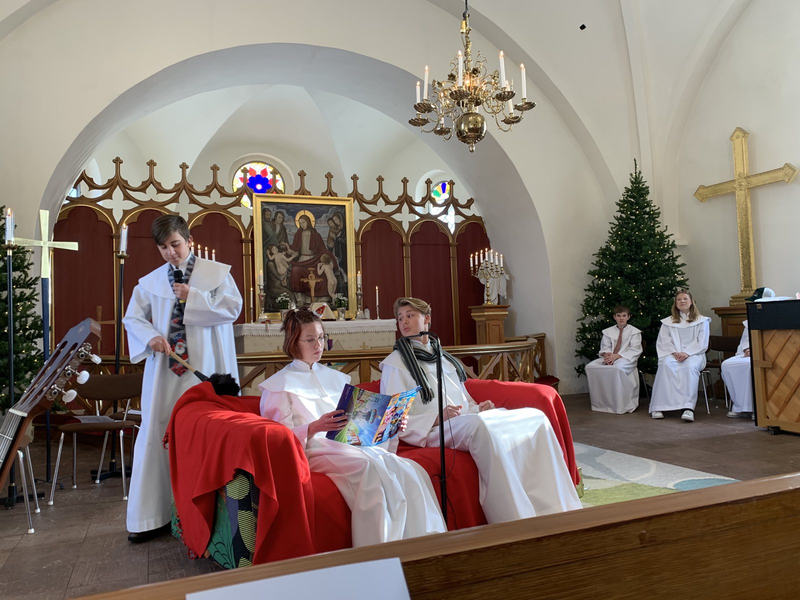
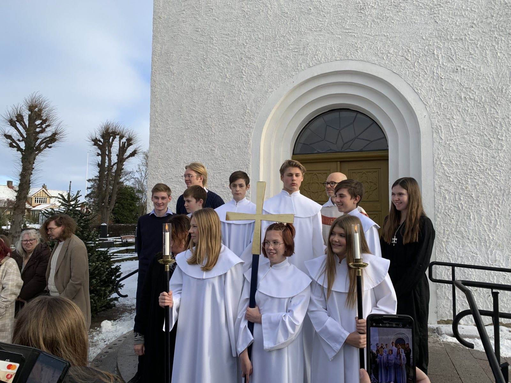
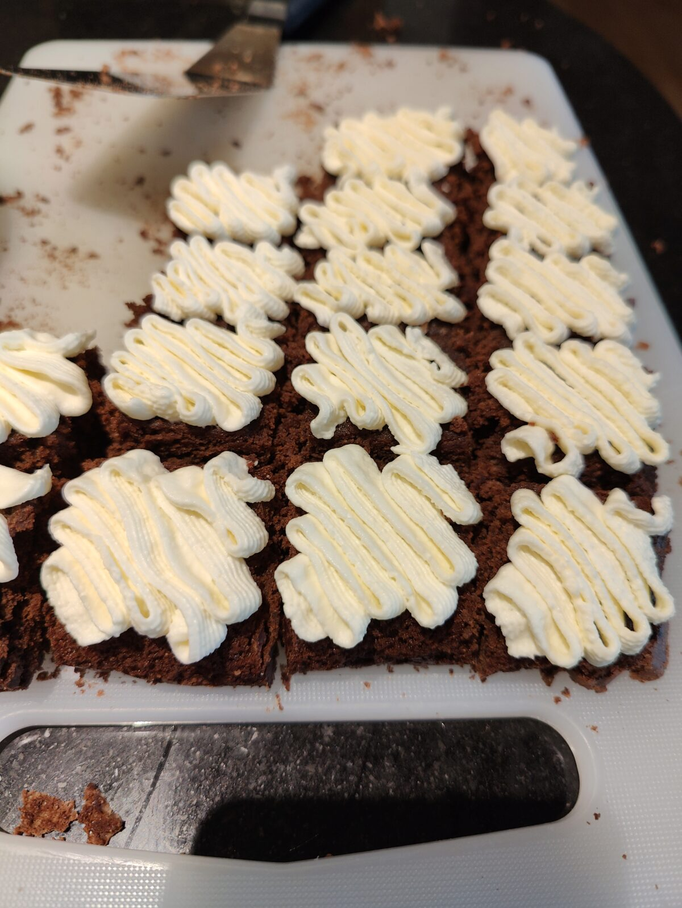
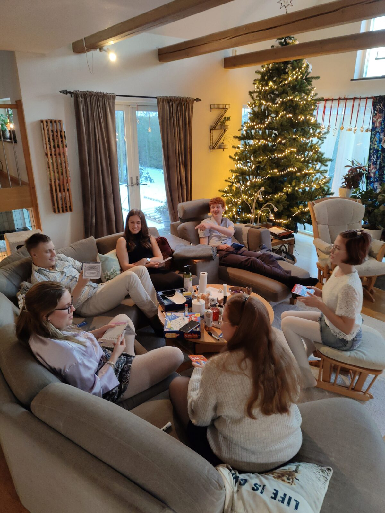

Rudolf hörde att prästen pratade
om Martin och Bastian
och nån som kallades Helige Anders
Rudolf vet inte vem det är
Ha en bra lördag!
Ellinor har haft konfirmation idag
Rudolf fick stanna utanför kyrkan
men han kunde höra att
Beatrice också var med!
Hon sjöng stämmor med
musikpedagogen under välsignelsen
Rudolf hörde att prästen pratade
om Martin och Bastian
och nån som kallades Helige Anders
Rudolf vet inte vem det är
Inne i kyrkan spelade
konfirmanderna en liten pjäs
Och till sist gick de i procession
ut i den fina och kalla vinterdagen
Alla var glada
inte minst Ellinor
Sedan var det tillställning
hemma hos Ellinor
(totalt tretton personer)
Det bjöds på Lasagne
och sedan kakor
Här sitter barnen och spelar
det där rita-gissa spelet
och hade jätteroligt
